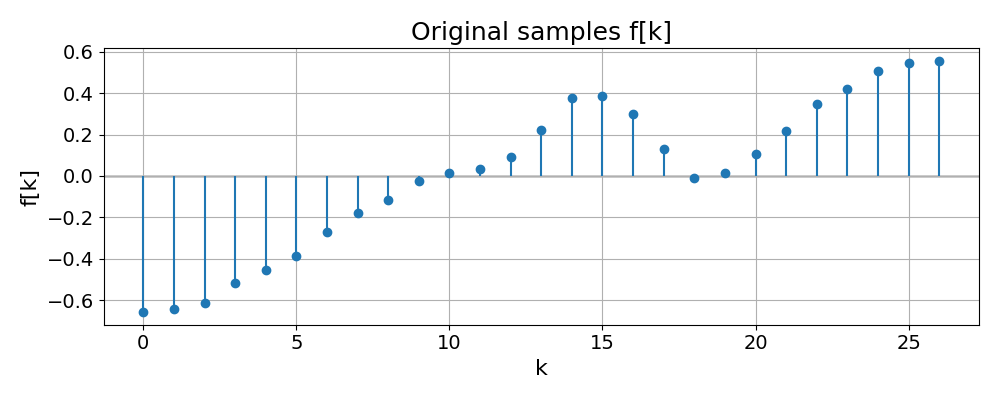
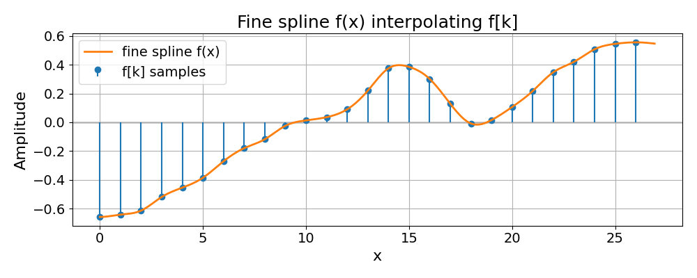
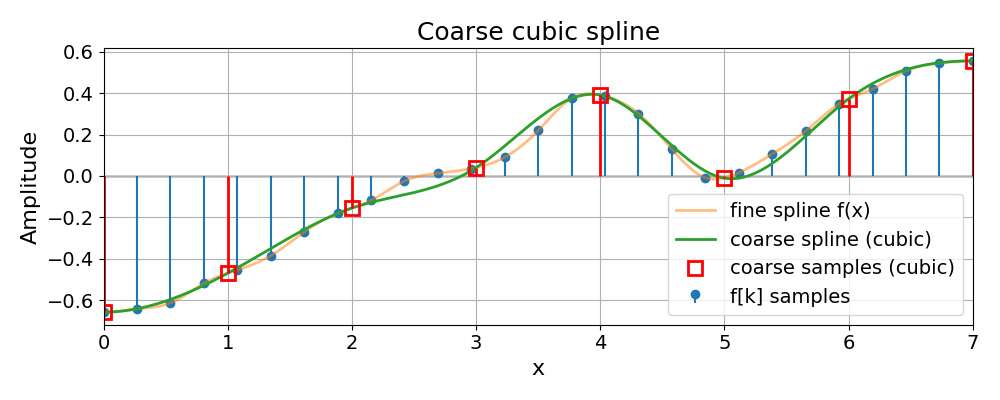
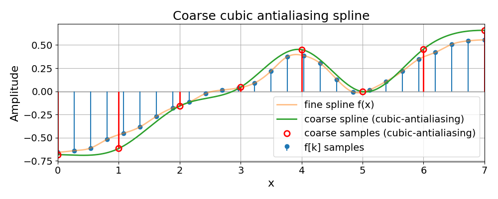
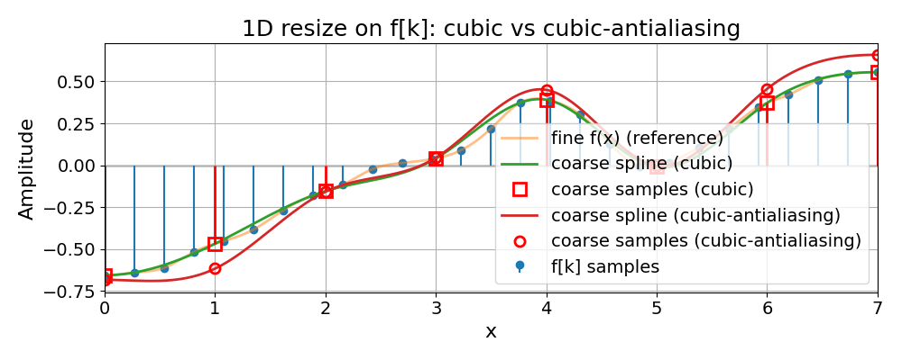

Resize Module 1D#
Starting from a 1D signal \(f[k]\) on a unit grid, we perform a 1D resize directly on the samples and compare:
a coarse spline built from
resize(..., method="cubic"),a coarse spline built from
resize(..., method="cubic-antialiasing"),the interpolating spline \(f(x)\) of the original samples for reference.
We build up the visualization step-by-step:
Only the original samples \(f[k]\).
The fine interpolating spline \(f(x)\).
The coarse spline from
resize(..., "cubic").The coarse spline from
resize(..., "cubic-antialiasing").Everything together on one plot.
Imports#
import numpy as np
import matplotlib.pyplot as plt
from splineops.resize import resize # core 1-D spline resizer
from splineops.spline_interpolation.tensor_spline import TensorSpline
plt.rcParams.update({
"font.size": 14,
"axes.titlesize": 18,
"axes.labelsize": 16,
})
1D Resize-Based Coarsening#
Starting again from a 1D signal f[k] on a unit grid, we perform a 1D resize directly on the samples. We then compare:
a coarse spline built from resize(…, method=”cubic”),
a coarse spline built from resize(…, method=”cubic-antialiasing”),
the interpolating spline f(x) of the original samples for reference.
# 1) Original 1D samples f[k] (same as in 02_01 / 02_02)
number_of_samples = 27
f_support_1d = np.arange(number_of_samples, dtype=np.float64)
f_samples_1d = np.array([
-0.657391, -0.641319, -0.613081, -0.518523, -0.453829, -0.385138,
-0.270688, -0.179849, -0.11805, -0.0243016, 0.0130667, 0.0355389,
0.0901577, 0.219599, 0.374669, 0.384896, 0.301386, 0.128646,
-0.00811776, 0.0153119, 0.106126, 0.21688, 0.347629, 0.419532,
0.50695, 0.544767, 0.555373
], dtype=np.float64)
Original Samples#
We start by visualizing only the discrete samples \(f[k]\) on the unit grid.
plt.figure(figsize=(10, 4))
plt.title("Original samples f[k]")
plt.stem(f_support_1d, f_samples_1d, basefmt=" ")
plt.axhline(0, color="black", linewidth=1, zorder=0)
plt.xlabel("k")
plt.ylabel("f[k]")
plt.grid(True)
plt.tight_layout()
plt.show()

Fine Spline f(x)#
Next, we build the fine interpolating spline \(f(x)\) on the unit grid using cubic B-splines, and sample it densely for visualization.
# Fine spline f(x) on V₁ (unit grid)
plot_points_per_unit_1d = 12
base_1d = "bspline3"
mode_1d = "mirror"
f_1d = TensorSpline(
data=f_samples_1d,
coordinates=f_support_1d,
bases=base_1d,
modes=mode_1d,
)
# Dense evaluation grid for the fine spline
f_coords_1d = np.array([
q / plot_points_per_unit_1d
for q in range(plot_points_per_unit_1d * number_of_samples)
])
f_data_1d = f_1d(coordinates=(f_coords_1d,), grid=False)
plt.figure(figsize=(10, 4))
plt.title("Fine spline f(x) interpolating f[k]")
plt.stem(f_support_1d, f_samples_1d, basefmt=" ", label="f[k] samples")
plt.axhline(0, color="black", linewidth=1, zorder=0)
plt.plot(
f_coords_1d,
f_data_1d,
linewidth=2,
label="fine spline f(x)",
)
plt.xlabel("x")
plt.ylabel("Amplitude")
plt.grid(True)
plt.legend()
plt.tight_layout()
plt.show()

Coarse Grid and Resize#
We now choose a coarser grid and obtain coarse samples by resizing the original discrete signal with two different methods.
# 2) Choose a coarse length: round(27 // π)
val_T = np.pi
K = number_of_samples
g_support_length = round(K // val_T) # e.g., 27 // π ≈ 8
# Express this as a zoom factor for resize
zoom_1d = g_support_length / K # e.g., 8 / 27
# 3) Coarse samples via resize: cubic and cubic-antialiasing
g_samples_cubic = resize(
f_samples_1d,
zoom_factors=(zoom_1d,),
method="cubic",
).astype(np.float64)
g_samples_aa = resize(
f_samples_1d,
zoom_factors=(zoom_1d,),
method="cubic-antialiasing",
).astype(np.float64)
L = g_samples_cubic.shape[0]
# 4) Reconstruct the continuous coarse grid used by resize for pure interpolation:
#
# step = (K - 1) / (L - 1)
# x_l = step * l
#
step = (K - 1) / (L - 1) if L > 1 else 0.0
g_support_x = step * np.arange(L, dtype=np.float64)
# Build TensorSplines on that coarse grid
g_cubic_ts = TensorSpline(
data=g_samples_cubic,
coordinates=g_support_x,
bases=base_1d,
modes=mode_1d,
)
g_aa_ts = TensorSpline(
data=g_samples_aa,
coordinates=g_support_x,
bases=base_1d,
modes=mode_1d,
)
# Evaluate both coarse splines on the same dense grid as f(x)
g_coords_dense = f_coords_1d
g_cubic_data = g_cubic_ts(coordinates=(g_coords_dense,), grid=False)
g_aa_data = g_aa_ts(coordinates=(g_coords_dense,), grid=False)
# Optional sanity check at the coarse nodes: resize(cubic) vs fine spline sampled at x_l
f_at_xg = f_1d(coordinates=(g_support_x,), grid=False)
mse_cubic_nodes = np.mean((g_samples_cubic - f_at_xg) ** 2)
print(f"MSE at coarse nodes: resize(cubic) vs f(x_l) = {mse_cubic_nodes:.6e}")
MSE at coarse nodes: resize(cubic) vs f(x_l) = 3.046348e-14
Coarse Cubic Spline#
We now show the coarse spline built from the "cubic" resize together
with the original samples and fine spline.
plt.figure(figsize=(10, 4))
plt.title("Coarse cubic spline")
plt.stem(f_support_1d, f_samples_1d, basefmt=" ", label="f[k] samples")
plt.axhline(0, color="black", linewidth=1, zorder=0)
plt.plot(
f_coords_1d,
f_data_1d,
linewidth=2,
alpha=0.5,
label="fine spline f(x)",
)
plt.plot(
g_coords_dense,
g_cubic_data,
linewidth=2,
label="coarse spline (cubic)",
)
# vertical red stems from coarse samples
plt.vlines(
x=g_support_x,
ymin=0,
ymax=g_samples_cubic,
color="red",
linewidth=2.0,
)
# (optionally change "s" -> "rs" to make markers red squares)
plt.plot(
g_support_x,
g_samples_cubic,
"rs",
mfc="none",
markersize=10,
markeredgewidth=2,
label="coarse samples (cubic)",
)
# --- coarse-grid x-axis, like in 02_02 ---
coarse_indices = np.arange(L, dtype=int)
plt.xlim(0, K - 1)
plt.xticks(g_support_x, [str(k) for k in coarse_indices])
plt.xlabel("x")
plt.ylabel("Amplitude")
plt.grid(True)
plt.legend()
plt.tight_layout()
plt.show()

Coarse Cubic Antialiasing Spline#
Similarly, we show the coarse spline obtained with the antialiasing preset, which inserts a low-pass step before decimation.
plt.figure(figsize=(10, 4))
plt.title("Coarse cubic antialiasing spline")
plt.stem(f_support_1d, f_samples_1d, basefmt=" ", label="f[k] samples")
plt.axhline(0, color="black", linewidth=1, zorder=0)
plt.plot(
f_coords_1d,
f_data_1d,
linewidth=2,
alpha=0.5,
label="fine spline f(x)",
)
plt.plot(
g_coords_dense,
g_aa_data,
linewidth=2,
label="coarse spline (cubic-antialiasing)",
)
# vertical red stems from coarse AA samples
plt.vlines(
x=g_support_x,
ymin=0,
ymax=g_samples_aa,
color="red",
linewidth=2.0,
)
plt.plot(
g_support_x,
g_samples_aa,
"ro", # red circles, hollow
mfc="none",
markersize=8,
markeredgewidth=2,
label="coarse samples (cubic-antialiasing)",
)
# --- coarse-grid x-axis ---
coarse_indices = np.arange(L, dtype=int)
plt.xlim(0, K - 1)
plt.xticks(g_support_x, [str(k) for k in coarse_indices])
plt.xlabel("x")
plt.ylabel("Amplitude")
plt.grid(True)
plt.legend()
plt.tight_layout()
plt.show()

All Splines Together#
Finally, we overlay both coarse splines on top of the fine spline and original samples for a direct comparison.
plt.figure(figsize=(10, 4))
plt.title("1D resize on f[k]: cubic vs cubic-antialiasing")
# Original samples f[k]
plt.stem(f_support_1d, f_samples_1d, basefmt=" ", label="f[k] samples")
plt.axhline(0, color="black", linewidth=1, zorder=0)
# Fine spline f(x) for reference
plt.plot(
f_coords_1d,
f_data_1d,
linewidth=2,
alpha=0.5,
label="fine f(x) (reference)",
)
# Coarse spline from resize(..., "cubic")
plt.plot(
g_coords_dense,
g_cubic_data,
linewidth=2,
label="coarse spline (cubic)",
)
# red stems for cubic coarse samples
plt.vlines(
x=g_support_x,
ymin=0,
ymax=g_samples_cubic,
color="red",
linewidth=2.0,
)
plt.plot(
g_support_x,
g_samples_cubic,
"rs",
mfc="none",
markersize=10,
markeredgewidth=2,
label="coarse samples (cubic)",
)
# Coarse spline from resize(..., "cubic-antialiasing")
plt.plot(
g_coords_dense,
g_aa_data,
linewidth=2,
label="coarse spline (cubic-antialiasing)",
)
plt.plot(
g_support_x,
g_samples_aa,
"ro",
mfc="none",
markersize=8,
markeredgewidth=2,
label="coarse samples (cubic-antialiasing)",
)
# --- coarse-grid x-axis ---
coarse_indices = np.arange(L, dtype=int)
plt.xlim(0, K - 1)
plt.xticks(g_support_x, [str(k) for k in coarse_indices])
plt.xlabel("x")
plt.ylabel("Amplitude")
plt.grid(True)
plt.legend()
plt.tight_layout()
plt.show()

Total running time of the script: (0 minutes 0.614 seconds)